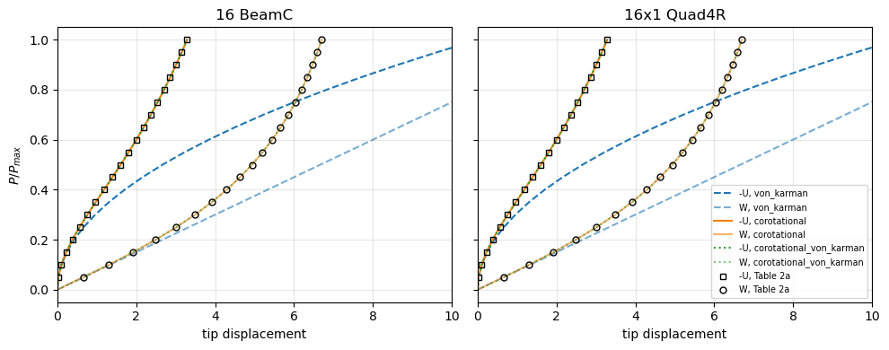
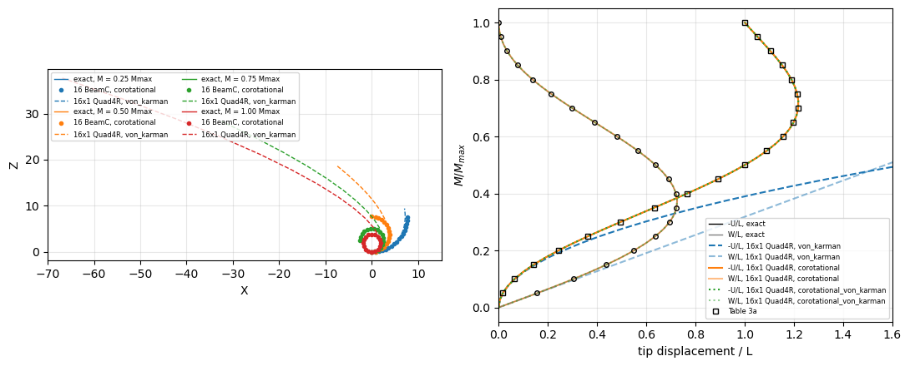
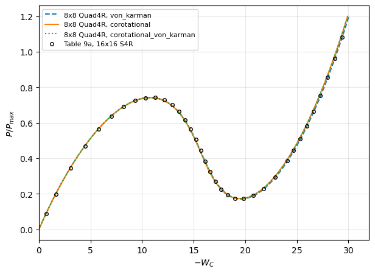

Tutorial: large rotations with the co-rotational kinematics#
Date: 30 of October 2026
Author: Saullo G. P. Castro
The elements of pyfe3d use either their own von Kármán strains, valid for small strains and moderate rotations, or, through pyfe3d.corotational.CorotationalModel, the element-independent co-rotational (EICR) formulation, valid for large displacements and large rotations with small strains. This notebook compares the three non-linear kinematics of CorotationalModel.add() on three benchmarks of Sze, Liu and Lo [1]:
|
strains of the element |
range of validity |
|---|---|---|
|
von Kármán strains in the frame of the undeformed element |
small strains, moderate rotations |
|
linear strains in the co-rotational (CR) frame of the element |
small strains, large rotations |
|
von Kármán strains in the CR frame |
small strains, large rotations |
In the CR frame the von Kármán terms of the shells (Quad4R here) and of BeamLR vanish, and 'corotational_von_karman' gives the results of 'corotational' for them, to round-off; it changes the results of BeamC only, whose von Kármán axial strain is averaged over the element, see the Notes of pyfe3d.corotational.CorotationalBeam and Crisfield [4], Section 17.1.5, Eqs. (17.56a-b).
The cases, with the figures and tables of [1] that give their data and reference values:
Section 3.1, Fig. 2a, Table 2a (p. 1556): cantilever under an end shear force,
BeamCandQuad4R, Newton-Raphson;Section 3.2, Fig. 3a, Table 3a (p. 1557): cantilever rolled up into a full circle by an end moment,
BeamCandQuad4R, against the exact circle, Newton-Raphson;Section 3.8, Fig. 9a, Table 9a (pp. 1564-1565): hinged cylindrical roof, 12.7 thick, under a central point load,
Quad4R, Crisfield’s arc-length method.
The models and the reference values are imported from tests/test_corotational_benchmarks.py and tests/test_nonlinear_benchmarks_sze2004.py, which run the same comparisons as tests, with the tolerances stated below; the convergence of the meshes used here is documented in the docstrings of those tests. The von Kármán kinematics of the elements alone, assembled without CorotationalModel, are compared with the same benchmarks in the notebook Geometrically non-linear benchmarks. The
cells below run in less than half a minute.
References#
[1] Sze, K. Y., Liu, X. H. and Lo, S. H., Popular benchmark problems for geometric nonlinear analysis of shells, Finite Elements in Analysis and Design, 40(11), 1551-1569, 2004, doi:10.1016/j.finel.2003.11.001.
[2] Felippa, C. A. and Haugen, B., A unified formulation of small-strain corotational finite elements: I. Theory, Computer Methods in Applied Mechanics and Engineering, 194(21-24), 2285-2335, 2005, doi:10.1016/j.cma.2004.07.035.
[3] Nour-Omid, B. and Rankin, C. C., Finite rotation analysis and consistent linearization using projectors, Computer Methods in Applied Mechanics and Engineering, 93(3), 353-384, 1991, doi:10.1016/0045-7825(91)90248-5.
[4] Crisfield, M. A., Non-linear Finite Element Analysis of Solids and Structures, Volume 2: Advanced Topics, John Wiley & Sons, Chichester,
[5] MacNeal, R. H. and Harder, R. L., A proposed standard set of problems to test finite element accuracy, Finite Elements in Analysis and Design, 1(1), 3-20, 1985, doi:10.1016/0168-874X(85)90003-4.
Two settings of the co-rotational models#
Rotations below one revolution. The rotational degrees-of-freedom of the nodes of co-rotational elements are total rotation vectors \(\boldsymbol{\psi}_a\), the nodal rotation matrix being \(\boldsymbol{R}_a = \exp(\mathrm{Spin}(\boldsymbol{\psi}_a))\); no state is kept between the evaluations, and the solvers of pyfe3d.solver add the rotation vectors like the translations. The map from the variation of \(\boldsymbol{\psi}\) to the spin,
\(\boldsymbol{\Lambda}(\boldsymbol{\psi})\) (pyfe3d.corotational.Lambda), is singular at \(|\boldsymbol{\psi}| = 2 k \pi\), \(k \ge 1\): each nodal rotation must stay below one full revolution, \(|\boldsymbol{\psi}_a| < 2 \pi\). The cantilever of case 2 reaches this limit, its tip turning by \(2 \pi\) at the last load level, and cannot be continued beyond it.
Convergence criterion. The co-rotational kinematics take the nodal positions relative to the centroid of each element, so that the default convergence criterion of pyfe3d.solver suffices, without absTOL.
[1]:
%matplotlib inline
import os
import sys
import time
sys.path.insert(0, os.path.join('..', 'tests'))
import numpy as np
import matplotlib.pyplot as plt
import pyfe3d
from pyfe3d import DOF
from test_nonlinear_benchmarks_sze2004 import (CANTILEVER, TABLE_3A_EXACT,
TABLE_9A, elastica_tip, von_karman_tip, run_hinged_roof,
compare_with_table_9a, limit_points)
from test_corotational_benchmarks import (CANTILEVER_SHEAR, TABLE_2A,
TABLE_3A_S4R, analysis, at_levels, cantilever,
tip_deflections, elastica_end_force, polygon_tip,
run_cantilever_end_shear, run_corotational_roof)
print('pyfe3d', pyfe3d.__version__)
KINEMATICS = ['von_karman', 'corotational', 'corotational_von_karman']
STYLE = {'von_karman': 'C0--', 'corotational': 'C1-',
'corotational_von_karman': 'C2:'}
T_START = time.time()
pyfe3d 0.12.0
1. Cantilever under an end shear force (Section 3.1)#
Fig. 2a of [1]: length \(L = 10\), width \(b = 1\), thickness \(h = 0.1\), \(E = 1.2 \times 10^6\), \(\nu = 0\), clamped at \(X = 0\), under the end force \(P_{max} = 4 E I/L^2 = 4\) along \(+Z\), of fixed direction. Table 2a of [1] lists \(-U\) and \(W\) at the tip at 20 load levels, computed with 16x1 S4R elements; the tip rotates by 64 degrees at \(P_{max}\). The reference at \(P_{max}\) is also the inextensible elastica,
elastica_end_force(), derived and verified in tests/test_corotational_benchmarks.py.
The models: 16 BeamC elements, and a strip of 16x1 Quad4R elements, whose bending stiffness per unit width times \(b\) is \(EI\) for \(\nu = 0\), Newton-Raphson in 20 increments of \(0.05 P_{max}\).
Tolerances, those of the tests: the co-rotational paths within 1 % of Table 2a plus 0.0005 for its rounding at the 20 levels, and within 0.2 % of the elastica at \(P_{max}\). Without axial force the von Kármán cantilever bends as the linear one, \(W = P L^3/(3 E I)\), with \(u_{,x} = -w_{,x}^2/2\), which gives \(U = -(P/(EI))^2 L^5/15\) (derived in test_cantilever_end_shear_von_karman): the von Kármán paths are compared with these closed forms, within 0.2 % in \(W\)
and 0.5 % in \(U\).
[2]:
L, b, h, E, Pmax = (CANTILEVER_SHEAR[k] for k in ('L', 'b', 'h', 'E', 'Pmax'))
EI = E*b*h**3/12
Ue, We = elastica_end_force(4.)
print('elastica at P_max: -U %.4f, W %.4f; Table 2a: %.3f, %.3f'
% (L*Ue, L*We, TABLE_2A[-1, 1], TABLE_2A[-1, 2]))
shear = {}
for element in ['BeamC', 'Quad4R']:
for kin in KINEMATICS:
m, U, W, t = run_cantilever_end_shear(element, 16, kinematics=kin)
shear[element, kin] = m, U, W
idx = at_levels(m, TABLE_2A[:, 0])
print('%-7s %-24s %.1f s; at P_max -U %7.4f (%+7.2f %%), W %7.4f (%+6.2f %%) '
'from the elastica; largest |difference| from Table 2a %.4f, %.4f'
% (element, kin, t, U[-1], 100*(U[-1]/(L*Ue) - 1), W[-1],
100*(W[-1]/(L*We) - 1), np.abs(U[idx] - TABLE_2A[:, 1]).max(),
np.abs(W[idx] - TABLE_2A[:, 2]).max()))
if kin == 'von_karman':
P = m*Pmax
print(' largest relative difference from the closed forms: '
'W %.1e, -U %.1e' % (np.abs(W/(P*L**3/(3*EI)) - 1).max(),
np.abs(U/((P/EI)**2*L**5/15) - 1).max()))
for element in ['BeamC', 'Quad4R']:
m, U, W = shear[element, 'von_karman']
idx = at_levels(m, TABLE_2A[:, 0])
print('%s von_karman: W over Table 2a %.4f at 0.05 P_max, %.4f at 0.10 P_max, %.3f at P_max'
% (element, W[idx[0]]/TABLE_2A[0, 2], W[idx[1]]/TABLE_2A[1, 2], W[-1]/TABLE_2A[-1, 2]))
fig, axes = plt.subplots(1, 2, figsize=(10, 4), sharey=True)
for ax, element in zip(axes, ['BeamC', 'Quad4R']):
for kin in KINEMATICS:
m, U, W = shear[element, kin]
ax.plot(np.r_[0, U], np.r_[0, m], STYLE[kin], lw=1.5, label='-U, %s' % kin)
ax.plot(np.r_[0, W], np.r_[0, m], STYLE[kin], lw=1.5, alpha=0.6, label='W, %s' % kin)
ax.plot(TABLE_2A[:, 1], TABLE_2A[:, 0], 'ks', mfc='none', ms=5, label='-U, Table 2a')
ax.plot(TABLE_2A[:, 2], TABLE_2A[:, 0], 'ko', mfc='none', ms=5, label='W, Table 2a')
ax.set_title('16 %s' % element if element == 'BeamC' else '16x1 Quad4R')
ax.set_xlim(0, 10)
ax.set_xlabel('tip displacement')
ax.grid(True, alpha=0.3)
axes[0].set_ylabel('$P/P_{max}$')
axes[1].legend(fontsize=7, loc='lower right')
plt.tight_layout()
plt.show()
elastica at P_max: -U 3.2894, W 6.6996; Table 2a: 3.286, 6.698
BeamC von_karman 0.1 s; at P_max -U 10.6676 (+224.30 %), W 13.3340 (+99.03 %) from the elastica; largest |difference| from Table 2a 7.3816, 6.6360
largest relative difference from the closed forms: W 5.0e-05, -U 8.3e-05
BeamC corotational 0.2 s; at P_max -U 3.2889 ( -0.02 %), W 6.7027 ( +0.05 %) from the elastica; largest |difference| from Table 2a 0.0029, 0.0047
BeamC corotational_von_karman 0.4 s; at P_max -U 3.2895 ( +0.00 %), W 6.7001 ( +0.01 %) from the elastica; largest |difference| from Table 2a 0.0035, 0.0029
Quad4R von_karman 0.1 s; at P_max -U 10.6417 (+223.51 %), W 13.3211 (+98.83 %) from the elastica; largest |difference| from Table 2a 7.3557, 6.6231
largest relative difference from the closed forms: W 9.2e-04, -U 2.3e-03
Quad4R corotational 0.4 s; at P_max -U 3.2862 ( -0.10 %), W 6.6984 ( -0.02 %) from the elastica; largest |difference| from Table 2a 0.0005, 0.0006
Quad4R corotational_von_karman 0.7 s; at P_max -U 3.2862 ( -0.10 %), W 6.6984 ( -0.02 %) from the elastica; largest |difference| from Table 2a 0.0005, 0.0006
BeamC von_karman: W over Table 2a 1.0056 at 0.05 P_max, 1.0186 at 0.10 P_max, 1.991 at P_max
Quad4R von_karman: W over Table 2a 1.0046 at 0.05 P_max, 1.0177 at 0.10 P_max, 1.989 at P_max

The two co-rotational kinematics follow Table 2a at all 20 levels with both elements, within its rounding with Quad4R; at \(P_{max}\) they are within 0.1 % of the elastica, whose difference from Table 2a is of the same order. The von Kármán path leaves Table 2a at once: its deflection is already 1.8 % too large at \(0.1 P_{max}\), a tip rotation of 0.2 rad, and it ends at twice the deflection of Table 2a, its tip moving back by \(-U = 10.7\), more than the length of the
cantilever. These are the closed forms above, the expected result of the von Kármán strains, not an error of the elements.
With Quad4R, 'corotational_von_karman' gives the path of 'corotational', since the von Kármán terms of the shell vanish in its CR frame. With BeamC it changes the path slightly, and moves it towards the elastica: the element-averaged von Kármán axial strain adds in the CR frame the local higher-order terms of [4], Eq. (17.56a), which make coarse meshes more accurate, see the table of test_cantilever_end_shear_corotational_von_karman (with 4 elements, -0.24 % and +0.68 % from
the elastica with 'corotational', -0.013 % and -0.010 % with 'corotational_von_karman').
2. Cantilever rolled up into a circle (Section 3.2)#
Fig. 3a of [1]: \(L = 12\), \(b = 1\), \(h = 0.1\), \(E = 1.2 \times 10^6\), \(\nu = 0\), clamped at \(X = 0\), under the end moment \(M_{max} = 2 \pi E I/L\) about \(-Y\), which bends the cantilever into a full circle of radius \(L/(2\pi)\), the tip returning to the root after turning by \(2 \pi\). The exact tip deflections, \(U/L = \sin\varphi/\varphi - 1\) and \(W/L = (1 - \cos\varphi)/\varphi\) with \(\varphi = M L/(EI)\), are listed in
Table 3a of [1] (elastica_tip(), checked against Table 3a in tests/test_nonlinear_benchmarks_sze2004.py).
The models: 16 BeamC elements and 16x1 Quad4R, Newton-Raphson in increments of \(0.05 M_{max}\) (BeamC) and \(0.025 M_{max}\) (Quad4R; with 0.05, Newton-Raphson cuts back three increments and misses the levels of Table 3a). The moment is applied with add_moment() for the co-rotational models, conjugate to the rotation vector, which is here the moment about the fixed axis \(-Y\), since \(\boldsymbol{\Lambda}^T
\boldsymbol{n} = \boldsymbol{n}\) for \(\boldsymbol{\psi} \parallel
\boldsymbol{n}\); for the von Kármán model it is the constant nodal moment of fext. The out-of-plane rotations \(\psi_X\) and \(\psi_Z\) are restrained at all the nodes, exact for this plane problem.
With 16 elements of equal length and no axial or shear force, the discrete solution is the polygon of 16 equal chords inscribed in the exact circle (polygon_tip(), derived in tests/test_corotational_benchmarks.py), which differs from the exact circle by at most \(0.0011 L\); the S4R columns of Table 3a, also 16x1, lie on that polygon within 0.0005.
Tolerances, those of the tests: 'corotational' on the polygon within \(10^{-7} L\) and within 0.001 of the S4R columns of Table 3a; the von Kármán paths on the von Kármán solution, \(W/L = \varphi/2\) and \(U/L = -\varphi^2/6\) (von_karman_tip()), to \(10^{-6}\) in \(W\) and 0.2 % in \(U\), the tolerances of test_cantilever_end_moment_quad4r.
[3]:
def run_end_moment(element, kinematics, inc, num_elements=16):
L, b, h, E = (CANTILEVER[k] for k in ('L', 'b', 'h', 'E'))
Mmax = 2*np.pi*E*b*h**3/12/L
model, bu, tip = cantilever(element, num_elements, L, b, h, E,
kinematics=kinematics)
for n in tip:
if kinematics == 'von_karman':
model.fext[DOF*n + 4] = -Mmax/len(tip)
else:
model.add_moment(n, [0., -Mmax/len(tip), 0.])
# NOTE plane problem: out-of-plane rotations restrained
bu[3::DOF] = False
bu[5::DOF] = False
m, cs, t = analysis(model, bu, inc)
U, W = tip_deflections(cs, tip)
return dict(m=m, U=U/L, W=W/L, cs=cs, model=model, tip=tip, t=t)
L = CANTILEVER['L']
mt = TABLE_3A_EXACT[:, 0]
U_ex, W_ex = elastica_tip(mt)
U_pol, W_pol = polygon_tip(mt, 16)
U_vk, W_vk = von_karman_tip(mt)
print('polygon of 16 chords against the exact circle: largest |difference| %.5f L, %.5f L'
% (np.abs(U_pol - U_ex).max(), np.abs(W_pol - W_ex).max()))
moment = {}
for element, inc in [('BeamC', 0.05), ('Quad4R', 0.025)]:
for kin in KINEMATICS:
r = run_end_moment(element, kin, inc)
moment[element, kin] = r
idx = at_levels(r['m'], mt)
U, W = r['U'][idx], r['W'][idx]
rot = np.mean([r['cs'][-1][DOF*n + 4] for n in r['tip']])
print('%-7s %-24s %.1f s; at M_max -U/L %.5f, W/L %.5f, tip rotation %.6f pi'
% (element, kin, r['t'], r['U'][-1], r['W'][-1], rot/np.pi))
if kin == 'von_karman':
print(' largest |W/L - von Kármán| %.1e, |U/U_vk - 1| %.1e'
% (np.abs(W - W_vk).max(), np.abs(U/U_vk - 1).max()))
else:
print(' largest |difference| from the polygon %.1e, %.1e; from the exact '
'circle %.1e, %.1e; from the S4R columns of Table 3a %.4f, %.4f'
% (np.abs(U - U_pol).max(), np.abs(W - W_pol).max(),
np.abs(U - U_ex).max(), np.abs(W - W_ex).max(),
np.abs(L*U - TABLE_3A_S4R[:, 1]).max(),
np.abs(L*W - TABLE_3A_S4R[:, 2]).max()))
polygon of 16 chords against the exact circle: largest |difference| 0.00078 L, 0.00111 L
BeamC von_karman 0.1 s; at M_max -U/L 6.57974, W/L 3.14159, tip rotation -2.000000 pi
largest |W/L - von Kármán| 6.6e-12, |U/U_vk - 1| 4.8e-12
BeamC corotational 0.2 s; at M_max -U/L 1.00000, W/L -0.00000, tip rotation -2.000000 pi
largest |difference| from the polygon 6.7e-16, 8.3e-16; from the exact circle 7.8e-04, 1.1e-03; from the S4R columns of Table 3a 0.0005, 0.0005
BeamC corotational_von_karman 0.5 s; at M_max -U/L 1.00000, W/L 0.00000, tip rotation -2.000000 pi
largest |difference| from the polygon 7.8e-04, 1.1e-03; from the exact circle 9.8e-07, 8.9e-07; from the S4R columns of Table 3a 0.0095, 0.0137
Quad4R von_karman 0.1 s; at M_max -U/L 6.57331, W/L 3.14159, tip rotation -2.000000 pi
largest |W/L - von Kármán| 6.9e-10, |U/U_vk - 1| 9.8e-04
Quad4R corotational 0.7 s; at M_max -U/L 1.00000, W/L 0.00000, tip rotation -2.000000 pi
largest |difference| from the polygon 2.9e-15, 4.1e-15; from the exact circle 7.8e-04, 1.1e-03; from the S4R columns of Table 3a 0.0005, 0.0005
Quad4R corotational_von_karman 1.3 s; at M_max -U/L 1.00000, W/L 0.00000, tip rotation -2.000000 pi
largest |difference| from the polygon 3.3e-15, 3.9e-15; from the exact circle 7.8e-04, 1.1e-03; from the S4R columns of Table 3a 0.0005, 0.0005
Both elements with 'corotational' lie on the polygon of 16 chords to round-off at the 20 levels, and their tips turn by exactly \(2 \pi\) at \(M_{max}\), back at the root: the full circle. The von Kármán models follow the von Kármán solution, which agrees with the exact one only for small rotations, and end at \(W = \pi L\), \(-U = 6.6 L\), far from the root.
BeamC with 'corotational_von_karman' does better than the polygon: its tip lies on the exact circle within \(10^{-6} L\), because the averaged von Kármán axial strain in the CR frame accounts for the arc of each element against its chord. Measured separately on 2026-10-30, its largest distance from the exact tip over the 20 levels is \(5 \times 10^{-3} L\), \(2.7 \times 10^{-4} L\) and \(1.0 \times 10^{-6} L\) with 2, 4 and 16 elements, decreasing about as \(n^{-4}\).
With Quad4R the two co-rotational kinematics coincide.
The deformed cantilevers at four levels of Table 3a, without amplification, with the exact circles:
[4]:
fig, axes = plt.subplots(1, 2, figsize=(11, 4.5))
s = np.linspace(0, L, 200)
for frac, color in [(0.25, 'C0'), (0.5, 'C1'), (0.75, 'C2'), (1.0, 'C3')]:
radius = L/(2*np.pi*frac)
axes[0].plot(radius*np.sin(s/radius), radius*(1 - np.cos(s/radius)), '-',
color=color, lw=1, label='exact, M = %.2f Mmax' % frac)
r = moment['BeamC', 'corotational']
i = int(np.argmin(np.abs(r['m'] - frac)))
x = r['model'].x.reshape(-1, 3)
u = r['cs'][i].reshape(-1, DOF)
axes[0].plot(x[:, 0] + u[:, 0], x[:, 2] + u[:, 2], 'o', color=color, ms=3,
label='16 BeamC, corotational')
r = moment['Quad4R', 'von_karman']
i = int(np.argmin(np.abs(r['m'] - frac)))
x = r['model'].x.reshape(-1, 3)
u = r['cs'][i].reshape(-1, DOF)
edge = np.isclose(x[:, 1], 0.)
axes[0].plot(x[edge, 0] + u[edge, 0], x[edge, 2] + u[edge, 2], '--',
color=color, lw=1, label='16x1 Quad4R, von_karman')
axes[0].set_aspect('equal')
axes[0].set_xlim(-70, 15)
axes[0].set_xlabel('X')
axes[0].set_ylabel('Z')
axes[0].grid(True, alpha=0.3)
axes[0].legend(fontsize=6, ncol=2, loc='upper left')
mm = np.linspace(0, 1, 201)
Uc, Wc = elastica_tip(mm)
axes[1].plot(Uc, mm, 'k-', lw=1, label='-U/L, exact')
axes[1].plot(Wc, mm, 'k-', lw=1, alpha=0.5, label='W/L, exact')
for kin in KINEMATICS:
r = moment['Quad4R', kin]
axes[1].plot(np.r_[0, r['U']], np.r_[0, r['m']], STYLE[kin], lw=1.5,
label='-U/L, 16x1 Quad4R, %s' % kin)
axes[1].plot(np.r_[0, r['W']], np.r_[0, r['m']], STYLE[kin], lw=1.5,
alpha=0.5, label='W/L, 16x1 Quad4R, %s' % kin)
axes[1].plot(TABLE_3A_EXACT[:, 1]/L, mt, 'ks', mfc='none', ms=4, label='Table 3a')
axes[1].plot(TABLE_3A_EXACT[:, 2]/L, mt, 'ko', mfc='none', ms=4)
axes[1].set_xlim(0, 1.6)
axes[1].set_xlabel('tip displacement / L')
axes[1].set_ylabel('$M/M_{max}$')
axes[1].grid(True, alpha=0.3)
axes[1].legend(fontsize=6, loc='lower right')
plt.tight_layout()
plt.show()

3. Hinged cylindrical roof, 12.7 thick (Section 3.8)#
Fig. 9a of [1]: cylindrical roof of radius \(R = 2540\), length \(2L\) with \(L = 254\), opening \(2\theta\) with \(\theta = 0.1\) rad, thickness \(h = 12.7\), \(E = 3102.75\), \(\nu = 0.3\), straight edges hinged with all the translations restrained, curved edges free, central point load \(P\) with \(P_{max} = 3000\). One quarter is meshed with 8x8 Quad4R elements and their default stabilisation, and the snap-through is traced with Crisfield’s
arc-length method up to \(1.2 P_{max}\), with increments of initialInc = maxInc = 0.05, for the three kinematics (hinged_roof(), run_hinged_roof() and run_corotational_roof() of the tests). Table 9a of [1] lists the path of 16x16 S4R elements.
Tolerances, those of the tests, which follow the grades of [5], p. 14: the upper limit load within 2 % of Table 9a (grade A) and the lower one within 10 % (grade B), the 8x8 mesh being coarser than that of Table 9a; 'corotational' and 'von_karman' within 0.001 \(P_{max}\) of each other up to the upper limit point, and within 0.03 \(P_{max}\) along the whole path; 'corotational_von_karman' on the path of 'corotational' to \(10^{-9} P_{max}\).
[5]:
roof = {}
for kin in KINEMATICS:
t0 = time.time()
if kin == 'von_karman':
P, W = run_hinged_roof(n=8)
else:
P, W, _ = run_corotational_roof(n=8, kinematics=kin)
roof[kin] = P, W
print('%-24s %d increments, %.1f s' % (kin, P.size - 1, time.time() - t0))
(Pu_ref, _), (Pl_ref, _) = limit_points(TABLE_9A[:, 0], TABLE_9A[:, 1], 15.)
calc = {}
for kin, (P, W) in roof.items():
(Pu, Wu), (Pl, Wl) = limit_points(P, W, 15.)
calc[kin] = compare_with_table_9a(P, W)
print('%-24s upper limit %.5f (%+.2f %%), lower limit %.5f (%+.2f %%), at -W_C = 29.374: %.4f'
% (kin, Pu, 100*(Pu/Pu_ref - 1), Pl, 100*(Pl/Pl_ref - 1), calc[kin][-1]))
print('Table 9a: upper limit %.4f, lower limit %.4f, at -W_C = 29.374: %.4f'
% (Pu_ref, Pl_ref, TABLE_9A[-1, 0]))
before = TABLE_9A[:, 1] <= 11.3
diff = np.abs(calc['corotational'] - calc['von_karman'])
print('|corotational - von_karman| at the points of Table 9a: %.4f up to the upper '
'limit point, %.4f along the path' % (diff[before].max(), diff.max()))
P, W = roof['corotational_von_karman']
Pc, Wc = roof['corotational']
print('corotational_von_karman - corotational: %.1e in P/P_max' % np.abs(P - Pc).max())
fig, ax = plt.subplots(figsize=(7, 5))
for kin in KINEMATICS:
ax.plot(roof[kin][1], roof[kin][0], STYLE[kin], lw=1.5, label='8x8 Quad4R, %s' % kin)
ax.plot(TABLE_9A[:, 1], TABLE_9A[:, 0], 'ko', mfc='none', ms=4,
label='Table 9a, 16x16 S4R')
ax.set_xlabel('$-W_C$')
ax.set_ylabel('$P/P_{max}$')
ax.set_xlim(0, 32)
ax.grid(True, alpha=0.3)
ax.legend(fontsize=8)
plt.show()
print('total time of the notebook %.0f s' % (time.time() - T_START))
von_karman 83 increments, 2.7 s
corotational 82 increments, 3.4 s
corotational_von_karman 82 increments, 7.3 s
von_karman upper limit 0.74293 (+0.11 %), lower limit 0.17183 (-0.62 %), at -W_C = 29.374: 1.0800
corotational upper limit 0.74211 (+0.00 %), lower limit 0.17306 (+0.09 %), at -W_C = 29.374: 1.1003
corotational_von_karman upper limit 0.74211 (+0.00 %), lower limit 0.17306 (+0.09 %), at -W_C = 29.374: 1.1003
Table 9a: upper limit 0.7421, lower limit 0.1729, at -W_C = 29.374: 1.0835
|corotational - von_karman| at the points of Table 9a: 0.0009 up to the upper limit point, 0.0203 along the path
corotational_von_karman - corotational: 8.4e-15 in P/P_max

total time of the notebook 20 s
The rotations of the roof stay small, and the two kinematics agree within 0.001 \(P_{max}\) up to the upper limit point, \(-W_C \approx 11\); they then part, by up to 0.02 \(P_{max}\) at the end of Table 9a, \(-W_C = 29.4\), where the deflection is about two thicknesses. On this 8x8 mesh the co-rotational path is 1.5 % above Table 9a at its last point and the von Kármán one 0.3 % below. Measured in test_hinged_roof_thick_corotational with the 16x16 mesh of Table 9a: 0.4 %
above and 1.4 % below, i.e. S4R, whose kinematics are those of finite rotations, follows the co-rotational path when the meshes are the same. 'corotational_von_karman' gives the path of 'corotational' to round-off, as expected for Quad4R.
Summary#
case |
reference |
|
|
|
|---|---|---|---|---|
3.1, end shear, 64 degrees |
Table 2a, elastica |
linear deflection, twice Table 2a at \(P_{max}\) |
within the tolerance of Table 2a, 0.1 % of the elastica |
|
3.2, end moment, \(2 \pi\) |
exact circle, Table 3a |
never rolls up, \(W = \pi L\) at \(M_{max}\) |
the inscribed polygon to round-off, full circle |
|
3.8, roof, snap-through |
Table 9a |
limit loads grade A and B |
limit loads grade A and B, closer to S4R at large deflections |
as |
The slit annular plate (Section 3.3) and the hemispherical shell (Section 3.4) of [1], with large rotations of shells, take about 10 s each with the meshes of the tests, and are run in tests/test_corotational_benchmarks.py only.